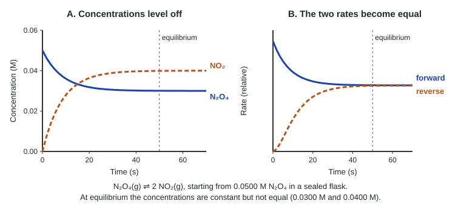

Introduction to Equilibrium
In a closed container, a reversible reaction slows as reactants are used, while the reverse reaction speeds up as products build.
Part 1 · Hook
Why this matters
Part 2 · Before you start
What this builds on
Part 3 · Prerequisite check
Quick check before you start
1. In a reversible reaction, what is the reverse reaction?
- Products reacting to re-form the reactants
- The same reaction run at a lower temperature
- Reactants forming a different set of products
- A reaction that absorbs heat
Show the answer
A reversible reaction can run back: the products collide and react to give the original reactants.
- Correct: Products reacting to re-form the reactants:
- The same reaction run at a lower temperature:
- Reactants forming a different set of products:
- A reaction that absorbs heat:
2. A liquid in a sealed jar reaches a steady vapor pressure. What is true at that point?
- Evaporation and condensation continue at equal rates
- Evaporation has stopped
- All of the liquid has evaporated
- Condensation has stopped
Show the answer
This is dynamic equilibrium: two opposite processes at equal rates, so nothing changes overall.
- Correct: Evaporation and condensation continue at equal rates:
- Evaporation has stopped:
- All of the liquid has evaporated:
- Condensation has stopped:
3. If the concentration of a reactant falls, what usually happens to the rate of the reaction that uses it?
- It decreases
- It increases
- It stays the same
- It becomes zero at once
Show the answer
Fewer reactant particles per liter means fewer collisions per second, so the rate drops.
- Correct: It decreases:
- It increases:
- It stays the same:
- It becomes zero at once:
Part 4 · See it
See it first

Part 5 · Step by step
How it works, step by step
- Reactants are sealed in a closed containeronly the forward reaction can run at first, at its fastest rate
- Reactants are used up and products build upthe forward rate falls and the reverse rate rises
- The two rates become equaleach species is made as fast as it is used, so every concentration stays constant
- Both reactions keep running at equal ratesthe equilibrium is dynamic: molecules still react, but the composition does not change
Part 6 · Key ideas
Key ideas
- Chemical equilibrium: the forward and reverse rates are equal, so all concentrations are constant.
- Constant does not mean equal. Equilibrium concentrations can be very different from each other.
- Equilibrium is dynamic: both reactions continue. It is reached from either direction and only in a closed system.
- On a concentration-time graph, equilibrium is where every curve becomes flat; changes before that follow the coefficients.
Part 7 · Misconception
A common mistake
The wrong idea: At equilibrium the reactions stop, and the reactants and products are present in equal amounts.
What actually happens: At equilibrium both reactions keep running at equal rates, so the amounts stay constant. The amounts are usually not equal; in the N₂O₄ flask, 0.0300 M N₂O₄ sits with 0.0400 M NO₂.
Part 8 · Check yourself
Check yourself
Exam-style questions. Anything you miss goes into your review queue.
Graph
Brown gas forming in a sealed flask
A student fills a sealed 1.00 L flask with colorless N2O4 gas at 0.0500 M and holds it at a constant temperature. The flask slowly turns brown as NO2 forms: N2O4(g) ⇌ 2 NO2(g). The graph shows the concentration of NO2, measured from the color, at several times.
Data table
| Time (s) | NO₂ |
|---|---|
| 0 | 0 |
| 10 | 0.028 |
| 20 | 0.036 |
| 30 | 0.039 |
| 40 | 0.04 |
| 50 | 0.04 |
| 60 | 0.04 |
| 70 | 0.04 |
| 80 | 0.04 |
1. Which statement best describes the reactions in the flask at 20 s?
- The forward rate is greater than the reverse rate.
- The forward and reverse rates are equal, so [NO2] is constant.
- The forward reaction runs by itself until the N2O4 is used up.
- The reverse rate is greater than the forward rate, so N2O4 is being re-formed.
Show the answer
A rising concentration of a product means the forward reaction is faster than the reverse reaction at that moment. The rates become equal only when the curve levels off.
- Correct: The forward rate is greater than the reverse rate.: Right: [NO₂] is still rising at 20 s, so NO₂ forms faster than it turns back into N₂O₄.
- The forward and reverse rates are equal, so [NO2] is constant.: Equal rates would make the curve flat. At 20 s the curve is still climbing, so the rates are not yet equal.
- The forward reaction runs by itself until the N2O4 is used up.: This treats the reaction as one-way. As soon as some NO₂ exists, NO₂ molecules collide and re-form N₂O₄, so the reverse reaction runs from the start.
- The reverse rate is greater than the forward rate, so N2O4 is being re-formed.: If the reverse rate were larger, [NO₂] would be falling. It is rising.
2. Use the graph to calculate [N2O4] once the system has reached equilibrium.
Type a number and its unit.
Show the answer
At equilibrium [NO₂] = 0.0400 M. The 2 : 1 ratio means N₂O₄ fell by 0.0400 M ÷ 2 = 0.0200 M. So [N₂O₄] = 0.0500 M − 0.0200 M = 0.0300 M.
- Answer: 0.0300 M
3. From 50 s on, [NO2] stays at 0.0400 M. Which statement explains why?
- NO2 forms and reacts away at equal rates.
- The N2O4 has run out, so no more NO2 can form.
- The molecules have stopped colliding because the flask has cooled.
- The concentrations of N2O4 and NO2 have become equal.
Show the answer
A flat concentration curve means the rate at which NO₂ forms equals the rate at which it is used up. Both reactions keep running.
- Correct: NO2 forms and reacts away at equal rates.: Right: both reactions continue, and equal rates cancel in their effect on concentration. This is a dynamic equilibrium.
- The N2O4 has run out, so no more NO2 can form.: From the 2 : 1 ratio, 0.0300 M N₂O₄ is still present. It has not run out; it reacts as fast as it is re-formed.
- The molecules have stopped colliding because the flask has cooled.: The temperature is held constant and gas molecules keep colliding. Equilibrium is not a halt in motion.
- The concentrations of N2O4 and NO2 have become equal.: At equilibrium [N₂O₄] = 0.0300 M and [NO₂] = 0.0400 M. Equilibrium means constant concentrations, not equal ones.
Particle view
One sealed container at four times
Key: X2Y2XY
The reaction is X2(g) + Y2(g) ⇌ 2 XY(g). The temperature is constant and t1 < t2 < t3.
4. Which statement describes what happens in the container between t2 and t3?
- XY forms and breaks apart at equal rates.
- No molecules react, because the reaction is complete.
- XY molecules keep forming, but XY molecules no longer break apart into X2 and Y2.
- X2 and Y2 keep reacting until one of them runs out.
Show the answer
At equilibrium the forward and reverse rates are equal and not zero. The diagrams look the same because the two reactions cancel each other's effect on the counts.
- Correct: XY forms and breaks apart at equal rates.: Right: equilibrium is dynamic. Individual XY molecules form and fall apart, but as many form as break apart in any stretch of time.
- No molecules react, because the reaction is complete.: This is the static view of equilibrium. The forward and reverse reactions both continue; they just balance.
- XY molecules keep forming, but XY molecules no longer break apart into X2 and Y2.: If XY only formed, its count would keep rising past 6. The count stays at 6, so XY also breaks apart.
- X2 and Y2 keep reacting until one of them runs out.: Neither runs out: 3 of each remain at t₂ and t₃. A reversible reaction stops changing well before a reactant is used up.
5. A sealed flask holds H2, I2 and HI at equilibrium: H2(g) + I2(g) ⇌ 2 HI(g). A tiny amount of I2 made of a radioactive iodine isotope is swapped in for the same amount of ordinary I2, so the concentrations do not change. Later, radioactive iodine atoms are found in HI molecules. What does this show?
- The forward reaction still runs at equilibrium.
- The system was not at equilibrium before the swap.
- The radioactive isotope made the forward reaction faster than the reverse reaction.
- Reactions at equilibrium have stopped, and the label moved into HI molecules through mixing of the gases.
Show the answer
Labeled atoms trace individual molecules. Finding the label in HI proves I₂ keeps reacting at equilibrium; HI must also keep breaking down at the same rate, since the concentrations do not change.
- Correct: The forward reaction still runs at equilibrium.: Right: the labeled I₂ could reach HI only by reacting. Constant concentrations with ongoing reaction is exactly a dynamic equilibrium.
- The system was not at equilibrium before the swap.: The concentrations were constant before and after the swap. The label simply reveals reactions that were already happening.
- The radioactive isotope made the forward reaction faster than the reverse reaction.: The concentrations stay constant, so the rates stay equal. The isotope behaves chemically like ordinary iodine.
- Reactions at equilibrium have stopped, and the label moved into HI molecules through mixing of the gases.: Mixing moves molecules around, but it cannot put an iodine atom inside an HI molecule. Bonds had to break and form.
6. A flask starts with 0.0800 M N2O4 and no NO2: N2O4(g) ⇌ 2 NO2(g). At equilibrium, [N2O4] = 0.0520 M. Calculate [NO2] at equilibrium.
Type a number and its unit.
Show the answer
N₂O₄ fell by 0.0800 M − 0.0520 M = 0.0280 M. The coefficients are 1 : 2, so [NO₂] = 2 × 0.0280 M = 0.0560 M.
- Answer: 0.0560 M
Part 9 · Summary
Summary
Part 10 · Up next
What comes next
Part 11 · Connections